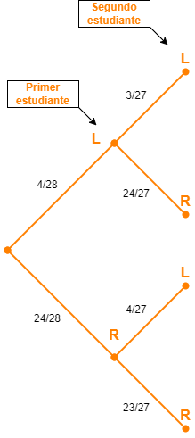
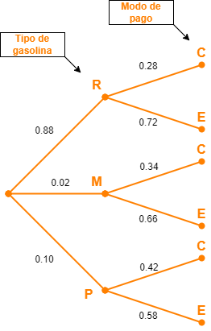

Diagramas de árbol
Contents
import numpy as np
import pandas as pd
from fractions import Fraction
# Calculo de la probabilidad
def prob(event, space):
"The probability of an event, given a sample space."
return Fraction(event, space)
Diagramas de árbol#
Un diagrama de árbol es un tipo especial de gráfico utilizado para determinar los resultados de un experimento. Consta de ramas que se identifican con frecuencias o probabilidades.
Los diagramas de árbol pueden hacer que algunos problemas de probabilidad sean más fáciles de visualizar y resolver.
A continuación vamos a realizar varios ejemplos para comprender su uso y potencial.
Ejemplos#
Ejemplo 1#
Los 28 estudiantes de un curso estadistica de la UdeM completaron una breve encuesta. Una de las preguntas preguntaba si cada estudiante era diestro o zurdo. La siguiente tabla muestra las respuestas dadas por lo estudiantes:
Mano |
Mujer |
Hombre |
|---|---|---|
Zurdo |
3 |
1 |
Diestro |
18 |
6 |
Suponiendo que se eligen dos estudiantes al azar.
Dibuje el diagrama de arbol que represente el problema.
Encuentre la probabilidad de que ambos estudiantes sean zurdos.
Solución#
Inicialmente definamos los eventos simples a partir del problema:
\(L\): Que el estudiante sea zurdo.
\(R\): Que el estudiante sea diestro.
\(M\): Que el estudiante sea mujer.
\(H\): Que el estudiante sea hombre.
Ahora procesamos a obtener todas las posibles salidas cuando se seleccionan dos estudiantes:
\(LL\): Ambos estudiantes son zurdos.
\(LR\): El primer estudiante elegido es zurdo y el segundo es diestro.
\(RL\): El primer estudiante elegido es diestro y el segundo es zurdo.
\(RR\): Los dos estudiantes elegidos son diestros.
Ahora, haciendo uso de la información de la tabla procedemos a dibujar el arbol con las respectivas probabilidades asociadas a cada rama:
Probabilidades para la eleccion del primer estudiante:
Probabilidades dependientes para la eleccion del segundo estudiante estudiante (notese que en este caso los eventos son dependientes):
Diagrama de arbol tenemos el siguiente resultado:

En el se pide \(P(ambos\;zurdos)\)
Empleando la notación definida para los eventos y el diagrama del arbol procedemos a realizar los calculos:
Lo anterior significa que hay una probabilidad de 1.6% de que los dos estudiantes seleccionados sea zurdo.
Ejemplo 2#
En el ultimo mes, el 88% de los conductores llenó sus vehículos con gasolina regular, el 2% lo hizo con gasolina de grado medio y el 10% uso gasolina premium. De los que compraron gasolina regular, el 28% pagó con tarjeta de crédito; mientras que de los clientes que compraron gasolina media y premium, el 34% y 42%, respectivamente, hizo pagó con tarjeta de crédito.
Suponiendo que se selecciona un cliente al azar.
Dibuje el diagrama de árbol que representa esta situación.
¿Cuál es la probabilidad de que el cliente pague con una tarjeta de credito?
Solución#
Inicialmente definamos los eventos simples a partir del problema:
\(R\): Que el carro se llene con gasolina regular.
\(M\): Que el carro se llene con gasolina de grado medio.
\(P\): Que el carro se llene con gasolina premium.
\(C\): Que el pago sea hecho usando tarjeta de credito.
\(E\): Que se pague con efectivo.
Teniendo en cuenta el tipo de gasolina y el modo de pago, tenemos el siguiente conjunto de salidas posibles:
\(RC\): El carro se lleno con gasolina regular y el pago se hizo con targeta de credito.
\(RE\): El carro se lleno con gasolina regular y el pago se hizo en efectivo.
\(MC\): El carro se lleno con gasolina de grado medio y el pago se hizo con targeta de credito.
\(ME\): El carro se lleno con gasolina de grado medio y el pago se hizo en efectivo.
\(PC\): El carro se lleno con gasolina premium y el pago se hizo con targeta de credito.
\(PE\): El carro se lleno con gasolina premium y el pago se hizo en efectivo.
Ahora, haciendo uso de la información del problema, vamos a definir las probabilidades
En el ultimo mes, el 88% de los conductores llenó sus vehículos con gasolina regular, el 2% lo hizo con gasolina de grado medio y el 10% uso gasolina premium. De los que compraron gasolina regular, el 28% pagó con tarjeta de crédito; mientras que de los clientes que compraron gasolina media y premium, el 34% y 42%, respectivamente, hizo pagó con tarjeta de crédito.
Partiendo de esta información y empleando las reglas de probabilidad ya conocidas obtenemos el diagrama de arbol el cual se muestra a continuación:
